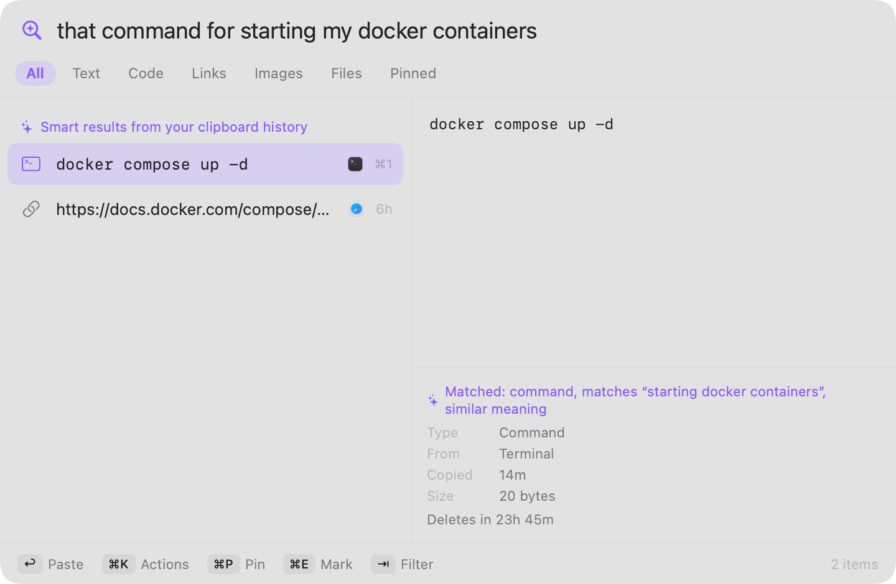
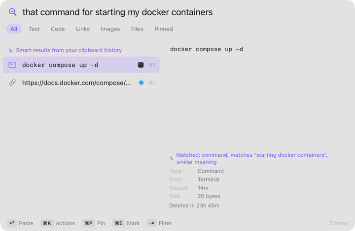
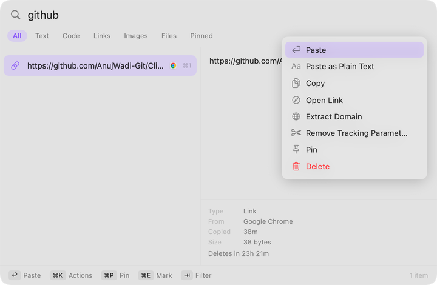
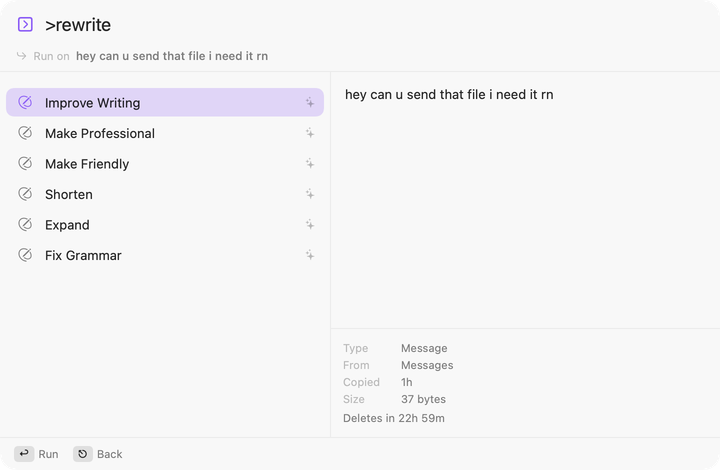

Download Clippy for Mac
Everything you copy, one shortcut away. Search it by what you remember, and it deletes itself after 24 hours.
Free · macOS 14 or later · Apple silicon · 2.4 MB
Get started
Three steps, about a minute.
Download and drag
Open Clippy.dmg and drag Clippy into Applications.
Open it once
Clippy isn’t Apple-notarized yet, so macOS may block it. Right-click, choose Open, or run this in Terminal:
xattr -dr com.apple.quarantine /Applications/Clippy.appPress ⌥ V
Your history opens above whatever you’re doing. Allow Accessibility so Clippy can paste for you.
Search by meaning, not exact words.
Type “that command for starting my docker containers” and Clippy finds docker compose up -d. Everything runs on your Mac.

Do things with what you copied.
Press ⌘ K on any clip for actions that fit it: paste as plain text, open a link, pull out its domain, or strip tracking parameters.

Type > to rewrite what you copied.
Type >rewrite and pick Improve Writing, Make Professional, Shorten or Fix Grammar. It runs on your Mac, and needs macOS 26 with Apple Intelligence.

Private by default.
Clippy checks every copy before saving it. Here is what that does, and what it can’t.
What Clippy does
- Skips passwords, card numbers, API keys and one-time codes before anything is stored.
- Deletes your history after 24 hours. Pin a clip to keep it.
- Encrypts pinned clips with a key kept in your Keychain.
- Runs search and rewriting on your Mac. Nothing is sent anywhere by default.
What it can’t promise
- Detection lowers the risk. It can’t catch every secret.
- Rewriting and smart search need macOS 26 with Apple Intelligence. Without it, Clippy is still a fast clipboard history.
- The app is signed ad hoc, not notarized, which is why step 2 exists.
- The source is public, so you can check all of this yourself.
Questions
Is it really free?
Yes. Clippy is free and the source is on GitHub.
Which Macs does it run on?
macOS 14 or later, on Apple silicon.
Why does macOS warn me when I open it?
The app isn’t notarized yet, which needs a paid Apple developer membership. Use Right-click → Open, or the Terminal command in step 2.
What does the Accessibility permission do?
It lets Clippy press ⌘V in the app you were using. Without it, Clippy still copies the clip and you press ⌘V yourself.
How do I skip a copy I don’t want saved?
Press the skip shortcut before you copy, and Clippy ignores the next one.
How do I uninstall it?
Quit Clippy, delete it from Applications, and remove ~/Library/Application Support/Clippy.